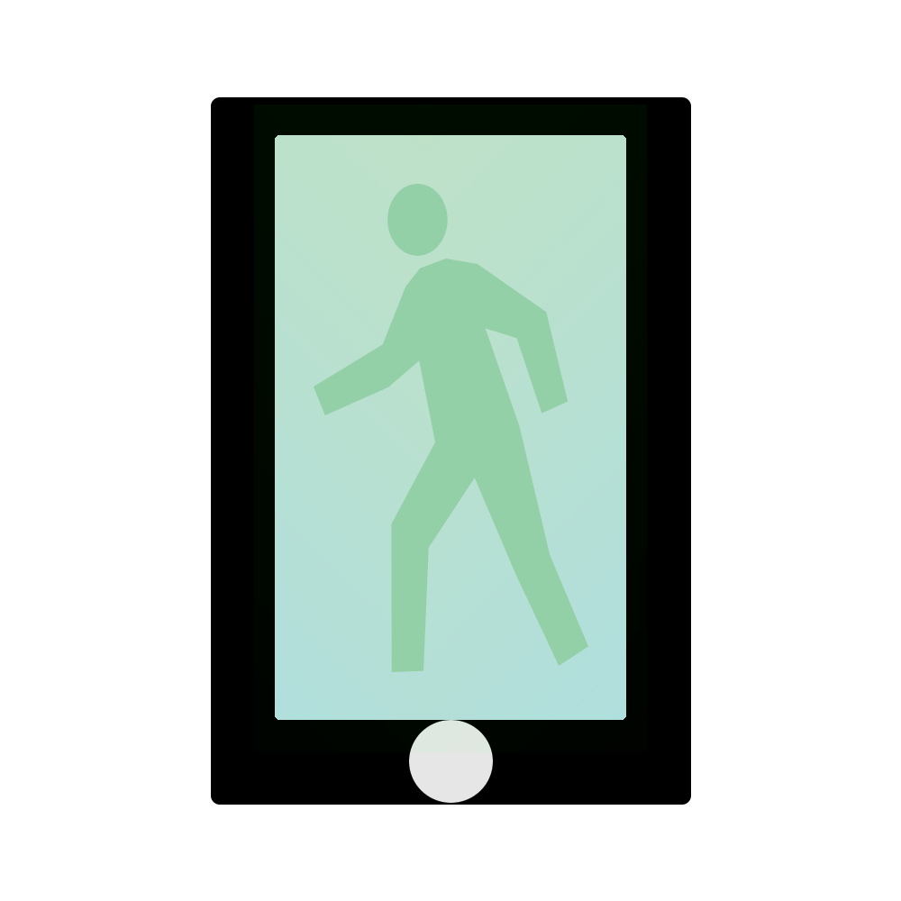

About FLEX
When a sports injury happens, the most important thing is the path to
recovery. Tracking progress towards recovery is crucial to determine
when an athlete can play again. That’s what inspired FLEX: a device,
app, and website designed to help athletes and their physicians on the
road to recovery. Using the FLEX device, athletes can measure range of
motion (ROM) in their affected limbs daily, without going to a physical
therapist to perform basic exercises. FLEX interprets data from the
FLEX device and suggests exercises to improve ROM in affected areas,
and patients can send their therapists information about their
progress to better develop a plan.
Beyond the world of athletic injuries, FLEX can make positive change
for anyone who wants to improve their flexibility.
From new dancers and gymnasts to those affected by arthritis,
surgeries, and joint pain, FLEX can guide anyone on the path to
increased range of motion.
NOTE: Any exercise recommendations are based on FLEX’s interpretation
of range-of-motion data, not the recommendation of a medical
professional. Always follow instructions from your doctor or physical
therapist.

Flex uses specially calibrated technology in order to take baseline measurements of your range of motion, set goals, and track your physical abilities over time.

Flex allows you to track your therapist-prescribed exercises and makes sure that you stay on your path to recovery.